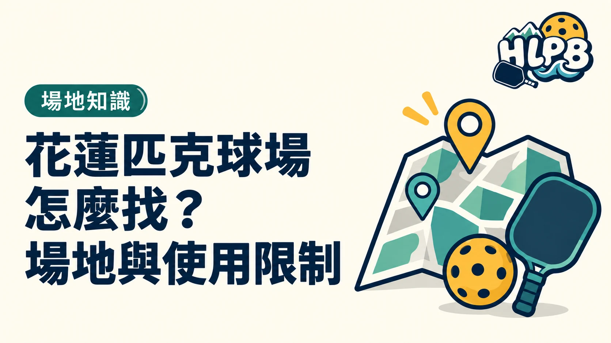

HLPB 目前整理 10 處花蓮匹克球場地資訊。這是本站收錄數，不代表花蓮全縣場地總量；選場地時先比較空間、設備與使用方式，比只看距離更完整。
十處場地，先依需求分類
| 類型 | 本站收錄地點 |
|---|---|
| 戶外公園與社區 | 中山公園、大陳二村、林芥公園 |
| 預約制室內球館 | 匹勁 |
| 校園場地 | 明恥、太昌、中原、中華、東華附小、花蓮高農 |
類型不是使用資格。校園須先取得安排；公園也可能有球類優先順序或器材需求。找到地點後，仍要看個別資料卡，不能只用戶外或室內判斷能否直接打。
哪些設備差異會影響準備？
中山公園與林芥公園需自備匹克球網；大陳二村收錄為固定球網、無照明；匹勁為室內預約制。中山公園目前資料列照明投幣 10 元／20 分鐘，另有單數日網球優先、偶數日匹克球優先的使用提醒。
怎麼使用球場列表比較快？
HLPB 建議先篩選地區與必要條件，再點進資料卡確認球網、照明、費用及地圖。場地照片幫助辨認環境，預約或原始公告則幫助確認當次使用；兩者不能互相替代。
對未提供的費用、時間或設備，不自行推定免費、全天開放或一定能借用。出發前依管理單位最新公告核對。
延伸閱讀：花蓮下雨天可以去哪裡打匹克球？室內場地先看使用資格、花蓮晚上打匹克球，先看照明，也要看使用資格。
資料來源：HLPB 花蓮球場資料。
內容更新：2026-10-20｜資料來源：HLPB 本站資料
返回文章列表